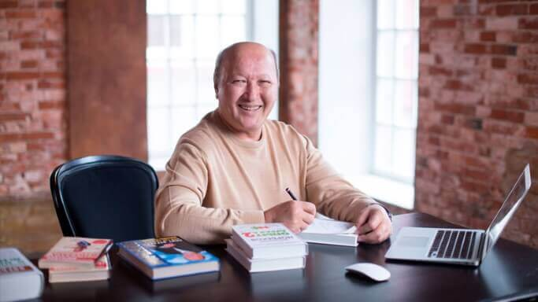

El autor del libro famoso "La experiencia del tonto, o el camino
a la recuperación de la vista"Juan Manuel Torero sorprendió con su descubrimiento a todo el mundo
científico de la oftalmología y la microcirugía.
Gracias a su descubrimiento único solo en 2023 decenas de miles de residentes Guatemalanos han recuperado completamente su
vista, y las clínicas comerciales continúan perdiendo clientes que rechazan operaciones costosas e
inseguras.

Juan Manuel Torero es doctor en psicología y pedagogía, doctor en filosofía medica, catedrático, miembro activo de varias academias, fundador y presidente del "Instituto de Autocuración Humana", autor de varios libros famosos que han ayudado a muchas personas.
Corresponsal: "Juan, ¡hola! Comenzaré con la pregunta principal, ¿es cierto que has encontrado un remedio para recuperar la vista sin cirugía en casa?"
Juan Manuel Torero: ¡Hola! Sí, realmente lo es y no dejo de recibir cartas de agradecimiento de personas que se han quitado las gafas y las lentes para siempre y viven una vida plena.
Corresponsal: "¿Puedes contar tu historia? ¿Qué remedio es?"
Juan Manuel Torero: Todo comenzó en el año 2001. Entonces escribí un libro que se llamaba "La experiencia del tonto, o el camino a la recuperación de la vista". En él presté mucha atención a la psicosomática humana y cómo afecta a la vista. Creo que la causa principal de la discapacidad visual de la mayoría de las personas es el mal funcionamiento de los músculos oculares, que se produce debido a la tensión neuropsiquiátrica.
Si el cerebro está bajo tensión, los ojos también comienzan a mirar con tensión y la
interpretación de la imagen en la retina se ve afectada. Como resultado, la vista se deteriora. Para
devolver la vista a la normalidad, primero debes eliminar la tensión psíquica, y solo entonces recurrir a
varias formas de corrección. Esta es una idea muy importante que muchos no entienden. Todos los problemas
tienen orígen nervioso, ¿oíste? Así que con la vista sucede exactamente lo mismo.
Corresponsal: "Por lo que sé, este libro todavía tiene una gran demanda y ha ayudado a muchas personas"
Juan Manuel Torero: Es cierto, la popularidad y la eficiencia del método ha sido tan alta que a lo largo de los años hemos tenido que abrir más de 120 centros de asesoramiento y capacitación. A lo largo de estos años, hemos ayudado a un gran número de personas a recuperar o mejorar completamente su vista. Pero, desafortunadamente, también hubo personas a quienes no pudimos ayudar. Según nuestros cálculos, en los últimos 10 años solo el 60% de las personas que vinieron a nuestros centros obtuvieron el resultado deseado. El otro 40% tuvo mejora mínima o ninguna en absoluto.
Corresponsal: "Debo decir que el 60% de las personas es una muy buena estadística, dado el hecho de que la recuperación de la vista se llevó a cabo sin cirugía, sino solo a través de gimnasia para la vista y el trabajo con psicosomática."
Juan Manuel Torero: Quizás tengas razón, pero ¿qué vamos a hacer con el resto del 40%? ¿Mandarles para que se hagan cirugía? ¿O darnos por vencido y que vivan una vida incompleta? Después de todo, es gracias a nuestros sentidos que nuestra vida se llena de colores.
Corresponsal: "¿Y qué hiciste?"
Juan Manuel Torero: Todos estos años hemos estado buscando una forma universal que ayude a muchas más personas a recuperar su vista. Notamos que nuestros pacientes que toman varios complejos de vitaminas, oligoelementos y sustancias especiales que afectan la actividad cerebral obtienen el mejor resultado. Por lo tanto, desde el año 2013 comenzamos a seleccionar varios complejos de medicamentos y sus dosis para encontrar una fórmula que maximice el efecto de la recuperación natural de la vista.

Corresponsal: "¿Funcionó?"
Juan Manuel Torero: Durante los primeros 5 años se probaron clínicamente más de 820
fórmulas diferentes de sustancias activas y sus dosis. Sin duda hubo un resultado, pero dejó mucho que
desear. Al finales del 2018 nuestros intentos finalmente
culminaron en un éxito colosal que ni siquiera podíamos imaginar.
Uno de los días fríos de diciembre
comenzó como siempre. Junto con un grupo de científicos, preparé otra combinación de medicamentos y dosis y
la entregué a nuestro grupo focal para los ensayos. El grupo focal estaba formado por 12 personas que se
encontraban en nuestro tratamiento hospitalario bajo la supervisión de científicos. Después de solo un par
de días, un paciente entró en mi oficina con los ojos sorprendidos y dijo:"Doctor, tengo una visión -6,
antes incluso no veía la hora en el reloj de la pared en mi habitación. Pero hoy me pasa algo. Ya la veo.
La veo. Es como si alguien hubiera retocado la nitidez de la imagen en mis ojos".
Esta fue la
primera señal. Después de 31 días, al final de las pruebas clínicas, obtuvimos un resultado que ni siquiera
esperábamos. 12 de los 12 pacientes pudieron recuperar la vista en más del 70%.
Después de lo
cual inmediatamente enviamos nuestra fórmula a ensayos clínicos más grandes. El resultado es el
siguiente: el 94% de los sujetos recuperaron parcial o totalmente su vista. Esto fue un gran avance en el
tratamiento no quirúrgico de la vista.
Acciones clínicamente establecidas del medicamento
- Prevención de enfermedades oculares
- Recuperación y preservación de la vista
- Protección de la vista en caso de mayor esfuerzo visual (cuando se trabaja delante del ordenador, se lee, se recibe la exposición negativa a la luz solar)
- Normalización de la presión intraocular
- Protección del cristalino, incluida su opacificación
- Mejora de la agudeza visual
- Reparación de células dañadas del órgano de la vista
- Mejora de la circulación sanguínea en los órganos de la vista
- Alivio del síndrome del ojo seco (fatiga, picor, enrojecimiento, ardor)
Corresponsal: "94% es realmente un resultado colosal, ¿las operaciones ahora serán cosa del pasado?"
Juan Manuel Torero: Creo que seguirán haciendo las operaciones, pero la necesidad de ellas ahora será mucho menor que antes. Después de ensayos clínicos exitosos, 4 de las mayores compañías farmacéuticas nos ofrecieron venderles una patente para la producción del medicamento de acuerdo con nuestra fórmula. Pero los rechazamos y decidimos producir y vender el medicamento solo en Guatemala.
Corresponsal: "Pero se requirió una gran inversión para la producción de un nuevo medicamento. ¿La encontraste en Guatemala?"
Juan Manuel Torero: Después de tener éxito, hemos recibido más de 40 propuestas de inversión de grandes empresas. Pero necesitábamos un socio confiable y conocido, por lo que aceptamos una oferta del Ministerio de Sanidad, que invirtió en el desarrollo del medicamento. Después de breves reuniones, se aprobó el nombre de un nuevo medicamento Guatemalana para mejorar la vista: .
Corresponsal: "¿Puedes aclarar con qué problemas de vista vale la pena tomar ?"
Juan Manuel Torero: Además del deterioro habitual de la vista, en los ensayos clínicos participaron pacientes con tales enfermedades como:
- miopía,
- glaucoma,
- catarata,
- inflamación del nervio óptico,
- neuritis óptica,
- uveítis,
- coriorretinitis,
- desprendimiento de retina,
- opacificación de la córnea,
- blefaritis,
- conjuntivitis,
- retinosis pigmentaria,
- queratitis
Por lo tanto, si tienes al menos una enfermedad de esta lista, puedes tomar este preparado de manera segura.
Corresponsal: "Creo que nuestros lectores tendrán una pregunta lógica. ¿Qué contiene exactamente la fórmula de este preparado y por qué es tan única?"
Juan Manuel Torero: Las pastillas no contiene ninguna sustancia activa única. Se trata
de un complejo adecuadamente seleccionado de estas sustancias y dosis verificadas. Como muestra la práctica
médica, este es el factor fundamental en la efectividad de los tratamientos no quirúrgicos y la corrección
de la vista.
Un factor importante es que el preparado resultó ser completamente natural, por lo que
prácticamente no tiene efectos secundarios y se puede usarlo sin prescripción médica. En otras palabras,
puedes recuperar la vista tú mismo en casa.
La composición de las pastillas incluye:
- Extracto de espinaca. Mejora la calidad y claridad de la visión, restaura la retina del ojo, previene el desarrollo de cataratas y la opacificación de la lente.
- Extracto de mora. Mejora el estado de los capilares pequeños, alivia la tensión ocular, ayuda a mejorar la claridad de la visión.
- Polvo de miel. Promueve la dilatación de los vasos y mejora la circulación sanguínea, alivia la fatiga y la fatiga ocular.
- Extracto de cúrcuma. Aumenta la efectividad del tratamiento del glaucoma ocular, detiene el desarrollo de cataratas.
Corresponsal: ¿Ya se está fabricando este preparado? ¿Y cuánto costará?
Juan Manuek Torero: El primer lote de 120,000 paquetes de se produjo a fines del
2018. Este lote fue enviado a clínicas y centros oftalmológicos. Queríamos asegurarnos una vez más de la
efectividad de nuestra fórmula. En apenas un par de meses, hemos recibido decenas de miles de
agradecimientos de todo el país. La gente continúa recuperando con éxito la vista con el medicamento
y estamos inmensamente contentos con esto.
Después de recibir tantos comentarios positivos,
entusiasmados con los resultados, decidimos lanzar otra oferta, pero ahora a través de Internet, para que
personas no solo de Europa, sino de América, también puedan probar . Hasta en Guatemala, por ejemplo, cualquier residente del país puede obtener el medicamento a
un precio promocional. La implementación del medicamento se lleva a cabo a través del pedido en
nuestro sitio web oficial. Al final de la promoción, el precio del preparado será de ,
este será el precio mínimo minorista para la venta del preparado por parte de los centros naturistas y
oftalmológicos. El coste final ha sido aprobado por todas las instituciones y no se subirá por encima del
precio acordado. Aún no se prevee fecha de entrada del a las farmacias. Hasta el momento se
realizarán los pedidos en su página oficial.
Corresponsal: "Juan, gracias por una entrevista tan interesante y útil. ¿Quieres decir algo antes de despedirse?"
Juan Manuel Torero: Solo diré una cosa. Tu principal arma es tu fe. Fe en ti mismo, en el éxito, en un futuro mejor. Creímos que íbamos a tener éxito y lo tuvimos. Por lo tanto, recupera tu visión, vive la vida al máximo, cree en ti mismo y también tendrás éxito. Como dijo el gran filósofo, el milagro ya está aquí, abre tu corazón para que entre. ¡Éxito!
Instrucciones para obtener el medicamento :
Período de promoción (hasta ) es necesario:
- Rellenar la solicitud en un sitio web especialmente diseñado.
- Esperar a que el operador llame e indicar a qué dirección hay que entregar el preparado.
- Después de unos días, necesitas recibir el paquete de la manera que desees
Con tú:
- Conservarás tu vista
- Reducirás la presión intraocular
- Eliminarás el riesgo de enfermedades peligrosas
- Protegerás el ojo de la destrucción por los radicales libres
Pedro
Gracias. Me pedí por la promoción. Voy a probarlo, la visión se agrava con cada año, pero tengo miedo de hacerme la cirugía. Mi vecino se la ha hecho, lleva 2 años sufriendo. Todo se está pudriendo y no se cura
Ana Flores
Totalmente confirmado. son unas pastillas increíbles. Las probé para recuperar mi
vista. He dejado de ver incluso las señales de tráfico últimamente. Comencé a tomar las pastillas por
consejo de un amigo, y todo se volvió bien. La agudeza visual me ha vuelto. ¡Aconsejo a todos!
Verónica
Gracias por el artículo. Es interesante. Si hay una oferta tan maravillosa, ¿por qué no intentarlo? Escuché del artículo hace mucho tiempo, muchos conocidos han mejorado su vista con su libro.
Arturo
Ahora mismo estoy recuperando la vista con este fármaco. Es la segunda semana del uso y la
vista se ha hecho notablemente más aguda. Si antes no podía ver desde el 5 piso el número del autobús en la
calle, ahora lo veo.
Víctor
También tengo una experiencia con estas pastillas y también es positiva. Recuperé la visión de -5 a -1.5. Lo tomé solo un mes.
Nuria
Escuché hace mucho bueno sobre , cuando aún estaba en prueba., pero entonces no tuve tiempo de obtenerlo. Gracias por hacer otra oferta, ahora finalmente tengo tiempo para pedirlo.
Lola
Un conocido se sometió a una cirugía ocular el año pasado. Dos veces (tuve que hacer otra). ¡No obtuvo ningún resultado, pero en el ojo derecho la vista se volvió aún peor! Los médicos no dicen nada, solo que no le han dado ninguna garantía. Entonces cómo vas a hacerte una cirugía con estas historias...
Felipe
Estoy gratamente sorprendido por la acción de las pastillas. También las recibí por el descuento del 50% desde el primer lote. Hasta que no lo compré, no lo creí. Pensé que con un descuento definitivamente no obtendría nada que valga la pena. Pero en 1,5 semanas la visión mejoró de -3.5 a -2.5. A veces siento una recuperación completa de la visión a corto plazo (unos segundos). Sigo tomándolo. Es un remedio genial.
Antonio
Nuestros científicos siempre han sido y serán muy dotados porque tenemos una buena escuela. Y el autor es una gran persona sin exagerar, tanto ha hecho por la salud de las personas, lo respeto mucho.
Elvira
Hoy recibí el paquete. Está bien todo. Me lo entregaron rápido. Y me sorprendió mucho pero de verdad resultó con un descuento. Gracias por esta oferta. Comenzamos la prevención con toda la familia.
María
Pensé en hacer una corrección de la visión, pero tenía mucho miedo. Hace dos meses me enteré de . Decidí tomarlo, la visión mejoró, ahora no voy a hacerme la operación
Pablo
Gracias por las recomendaciones. ¡Yo había visto este medicamento en un lugar donde lo estaban vendiendo casi por el doble de precio,!! Aparentemente lo habían comprado a bajo precio. Seguro son falsificaciones. Por eso lo compré aquí. hijos de puta
Sergio
¡Hola a todos! ¡Hace un mes tomé el curso de y la vista se convirtió en 1!!! No tengo palabras. ¡Muchas gracias!
Roberto
¡Leí los detalles sobre el medicamento en el sitio oficial! ¡Es impresionante!
Pepa
Me aconsejó un oftalmólogo familiar, dijo que no había nada mejor, incluso en los EEUU. Lo llevo tomando ya la segunda semana, comencé a ver muy bien, como si me hubieran quitado el velo de los ojos. Es un sentimiento maravilloso, no lo puedo describir.
Alejandro
Tomo para reducir la fatiga ocular. Trabajo duro ante el ordenador. Ayuda bien.
Juan
¡Gracias! Para nosotros los jubilados hacer la operación es muy caro. Es bueno que haya gente amable que entregue esa maravilla a precio tan barato.
Eva María
Honestamente, recuperar la vista con gimnasia es lo mismo que tratar de agrandar las tetas simplemente frotándolas. He oído que la gente tiene resultados, pero no lo creo. Pero con el remedio es bastante posible, leí la composición de y me impresionó mucho, creo que con un descuento lo tomaré y lo probaré.
Marta
¡Gracias!!!


Comentarios